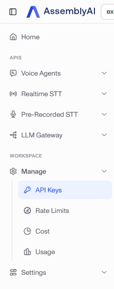
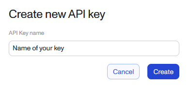
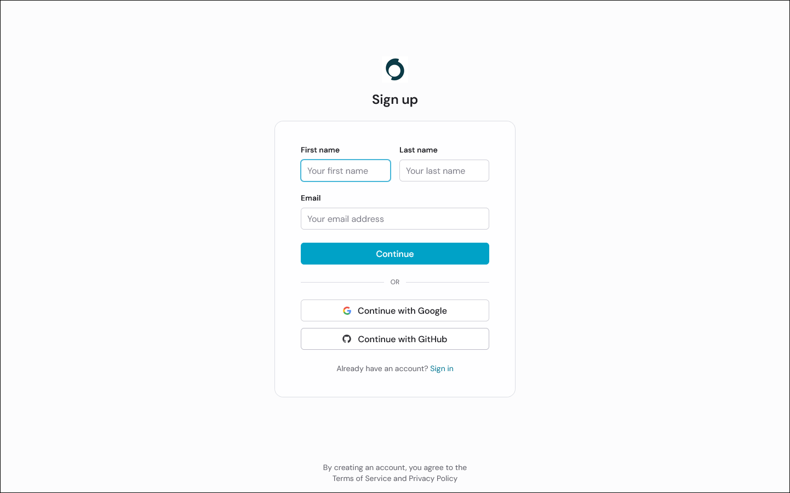
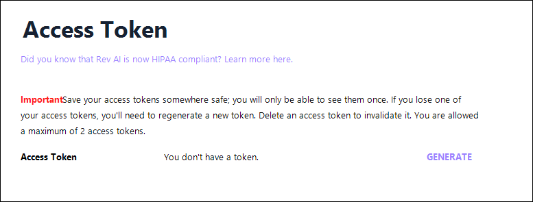

文字起こしプロバイダー
AssemblyAI
用途：単語単位のタイミング情報を伴う音声認識。
1 https://www.assemblyai.com/dashboard/signup にアクセスし、アカウントを作成します（メールまたはSSO）。クレジットカードは不要です。新規アカウントには、約 $50相当の無料クレジット（約330時間分）が付与されます。

2 メールの認証後、左サイドバーの Manage ▸ API Keys を開きます。

3 AssemblyAIは、プロジェクト用の Default API Key を作成します。そのキーをコピーするか、SubVox Pro専用のキーが必要な場合は Create new API key をクリックします。

4 新しいキーを作成する場合は、SubVoxProやプロジェクト名など、識別しやすい名前を付けてから、Create をクリックします。

5 キーの行からAPIキーをコピーします。

6 SubVox Pro（Settings ▸ AssemblyAI）に貼り付けます。
無料アカウントでは、プロジェクト2つ／APIキー2つまでという制限がありますが、SubVox Proを使用するには十分な数です。ヘルプ記事：https://support.assemblyai.com/articles/7562135267-how-to-get-your-api-key
Gladia
用途：音声認識。
1 https://app.gladia.io でサインアップします（メールまたはGoogle）。

2 ログイン後、左側のサイドバーにある API Keys を開きます。アカウントに紐付けられたすべてのキーが一覧表示されます。

3 SubVox Pro専用のキーが必要な場合は、作成フォームを使用し、
SubVoxProやプロジェクト名など、識別しやすい名前を付けます。

作成後、リストからキーをコピーします。Gladiaでは、後でキーの値が短縮表示される場合があるため、トークンの値全体を確認できるうちに、すぐにコピーしてください。

4 SubVox Pro（Settings ▸ Gladia）に貼り付けます。
無料プラン：月間10時間の文字起こし（API呼び出しは1時間あたり最大20回、同時処理3件まで）。ヘルプ：https://support.gladia.io/article/how-to-get-the-api-key-from-my-account
Deepgram
用途：音声認識。
1 https://console.deepgram.com/signup でアカウントを作成します。クレジットカードは不要で、$200相当の無料クレジットが付与されます（登録から1年後に失効します）。

2 Consoleで、左側のサイドバーから API Keys を開きます。

3 Create a New API Key をクリックします。

4 キーに分かりやすい名前を付けます。Set expiration では、ワークフローに合った期間を選択します。SubVox Proでは、キーの有効期間について特に指定はありません。

5 生成されたシークレットをコピーし、安全な場所に保存してください。Deepgramでは、このシークレットを再度表示することはできません。

6 SubVox Pro（Settings ▸ Deepgram）に貼り付けます。
Speechmatics
用途：音声認識。
1 Speechmatics Portal（https://portal.speechmatics.com）にアクセスし、アカウントを作成します。無料プランでは、クレジットカードの登録不要で、1回限りの $100相当のクレジットが付与されます。

2 プロジェクトのサイドバーで、Manage ▸ API Keys を開きます。

3 Create new key をクリックします。

4 キーに分かりやすい名前を付け、Generate new key をクリックします。

5 ダイアログを閉じる前に、キーをコピーしてください。セキュリティ上の理由により、Speechmaticsではキーが再度表示されません。

6 SubVox Pro（Settings ▸ Speechmatics）に貼り付けます。
ドキュメント：https://docs.speechmatics.com/get-started/authentication
ElevenLabs
用途：音声認識（ElevenLabs Scribe）および音声合成による吹き替え。
1 https://elevenlabs.io でサインアップします（メールまたはSSO）。クレジットカードは不要です。無料プランには、毎月少量の利用枠（約10分）が含まれています。無料プランは非商用であり、ElevenLabsのクレジット表記が必要です。公開するゲームの吹き替えには、有料プランが必要です。

2 ログイン後、左側のサイドバーから Developers を開きます。ここには、ElevenLabsのAPIアクセス、ログ、Webhook、環境変数がまとめられています。

3 Developersページで、API Keys タブを選択し、Create Key をクリックします。

4 キーに分かりやすい名前を付けます。Restrict Key を有効にする場合は、Speech to Text と Text to Speech の両方が Access に設定されていることを確認してください。SubVox Proは、文字起こしにScribeを使用し、吹き替え音声の生成にはText-to-Speech APIを使用します。


5 ダイアログを閉じる前に、生成されたAPIキーをコピーしてください。ElevenLabsでは、完全な値が表示されるのは1回のみです。

6 SubVox Pro（Settings ▸ ElevenLabs）に貼り付けます。ElevenLabsの文字起こしとTTSによる吹き替えでは、同じトークンを使用します。
APIリファレンス：Text-to-Speechエンドポイントでは、
xi-api-keyヘッダーを使用し、POST /v1/text-to-speech/:voice_idでテキストを音声に変換します：https://elevenlabs.io/docs/api-reference/text-to-speech/convert
Rev AI
用途：音声認識。
1 https://www.rev.ai/auth/signup でサインアップします。クレジットカードは不要で、5時間分の無料クレジットが付与されます。

2 Access Token ページ（https://www.rev.ai/access_token）にアクセスします。左側のナビゲーションの Access Token からも開けます。

3 まだトークンが存在しない場合は、Access Tokenページで Generate をクリックします。Rev AIでは、同時に有効にできるトークンは最大2つです。

4 生成されたトークンはすぐにコピーしてください。Rev AIでは、完全な値が表示されるのは1回のみです。その後は、リストには短縮されたプレビューと作成日しか表示されなくなります。

5 SubVox Pro（Settings ▸ Rev AI）に貼り付けます。